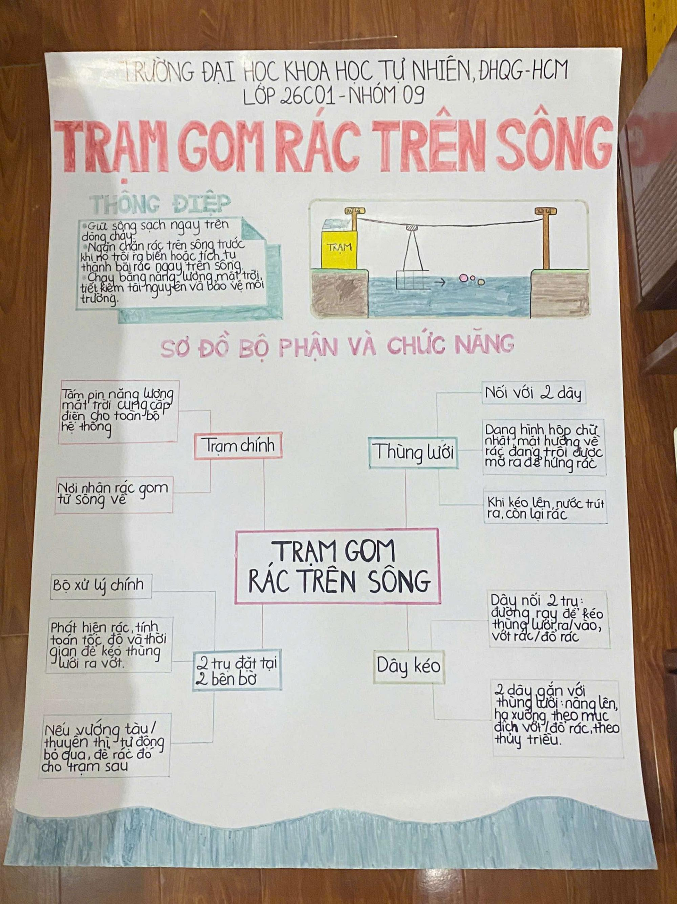

Ý tưởng hình thành
Ứng dụng tư duy công nghệ để hỗ trợ thu gom rác thải nổi trên sông, kết hợp cơ cấu di chuyển, năng lượng mặt trời và các công nghệ hỗ trợ giám sát.
Trạm gom rác trên sông là giải pháp bảo vệ môi trường sử dụng năng lượng mặt trời. Hệ thống được thiết kế với thùng lưới thông minh di chuyển giữa hai trụ bên bờ, hỗ trợ tự động thu gom rác thải nổi trên mặt nước, góp phần hạn chế rác thải trôi ra biển và bảo vệ hệ sinh thái sông ngòi.

Ứng dụng tư duy công nghệ để hỗ trợ thu gom rác thải nổi trên sông, kết hợp cơ cấu di chuyển, năng lượng mặt trời và các công nghệ hỗ trợ giám sát.
Rác thải nổi theo dòng nước có thể trôi xa, gây ảnh hưởng đến cảnh quan, hệ sinh thái sông ngòi và góp phần đưa rác ra biển.
Hệ thống thu gom rác nổi bằng thùng lưới di chuyển giữa hai trụ đặt ở hai bên bờ, hướng đến giữ sạch dòng sông và hạn chế rác trôi ra biển.
Thùng có dạng hộp chữ nhật, mặt hướng về rác dạng lưới để rác đi vào. Hai dây nối với hai trụ giúp kéo thùng ra/vào và nâng/hạ theo mực nước, thủy triều.
Tấm pin mặt trời được định hướng cung cấp điện cho toàn bộ hệ thống.
Khi thùng lưới được kéo lên, nước thoát ra, rác được giữ lại để đưa vào bờ và xử lý. Cơ cấu cần tính đến tình huống vướng tàu/thuyền để có phương án tự động bỏ qua, tránh cản trở giao thông thủy.
Sơ đồ mô tả định hướng cấu tạo, không phải bản vẽ kỹ thuật chế tạo.
Định hướng sử dụng năng lượng mặt trời để hỗ trợ vận hành hệ thống, hướng đến tiết kiệm năng lượng và giảm phụ thuộc vào nguồn điện truyền thống.
Hỗ trợ thu gom rác nổi, góp phần hạn chế rác trôi theo dòng nước, bảo vệ cảnh quan và nâng cao nhận thức về môi trường.
Cần nghiên cứu khả năng thích ứng với dòng chảy, thời tiết, vật cản; độ bền, bảo trì và quy trình xử lý rác sau thu gom.
Tiếp tục nghiên cứu cơ cấu di chuyển, hệ thống cảnh báo, khả năng phân loại rác và độ ổn định khi vận hành trong điều kiện thực tế.
Đây là phần giới thiệu ý tưởng và định hướng công nghệ. Chưa có số liệu hiệu suất, thông số kỹ thuật, kết quả thử nghiệm hoặc xác nhận sản phẩm đã hoàn thiện.